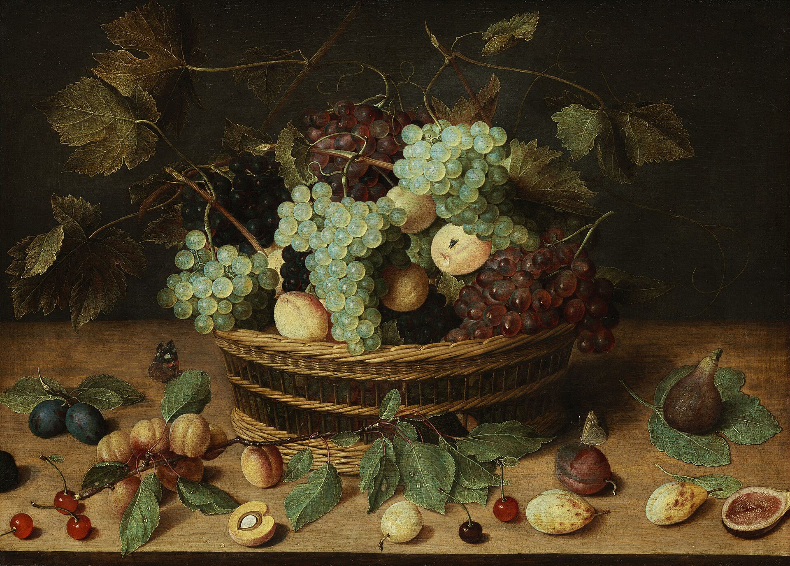
Kur’an-ı Kerim’de geçen yiyecekler: ayetler, izahları ve sağlığa faydaları.
فَلْيَنْظُرِ الْاِنْسَانُ اِلٰى طَعَامِه۪ۙ ﴿٢٤﴾
Şüphesiz Biz, suyu buluttan bol bol döktük. Sonra yeri, iyice yardık. Böylece orada taneler bitirdik ve üzüm, yonca, zeytin, hurma, sık ağaçlı bahçeler, meyveler ve otlaklar bitirdik. Bunları, sizin ve hayvanlarınızın faydalanması için yaptık.
Abese Sûresi, 25–32. ayetler
Yiyeceğin geçtiği ayeti ve mealini okuyoruz.
Tefsirdeki açıklamaya ve ilgili Hadis-i Şerif’lere bakıyoruz.
Bugünkü beslenme bilgisiyle ayeti yan yana koyuyoruz.
Kur’an-ı Kerim bu yiyecekleri yalnızca saymaz; her birini düşünmeye çağıran bir delil olarak anlatır.
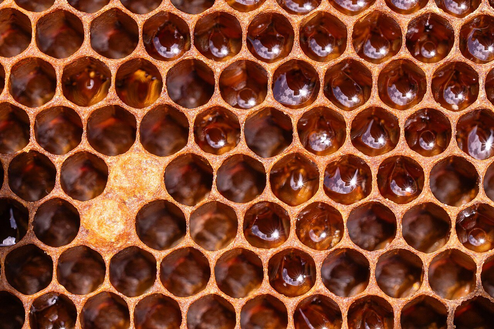
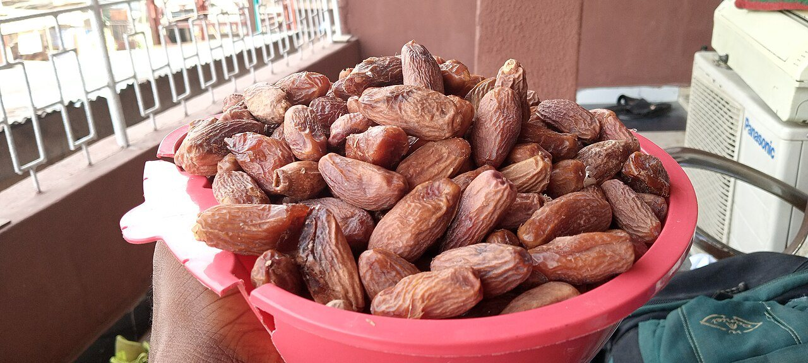
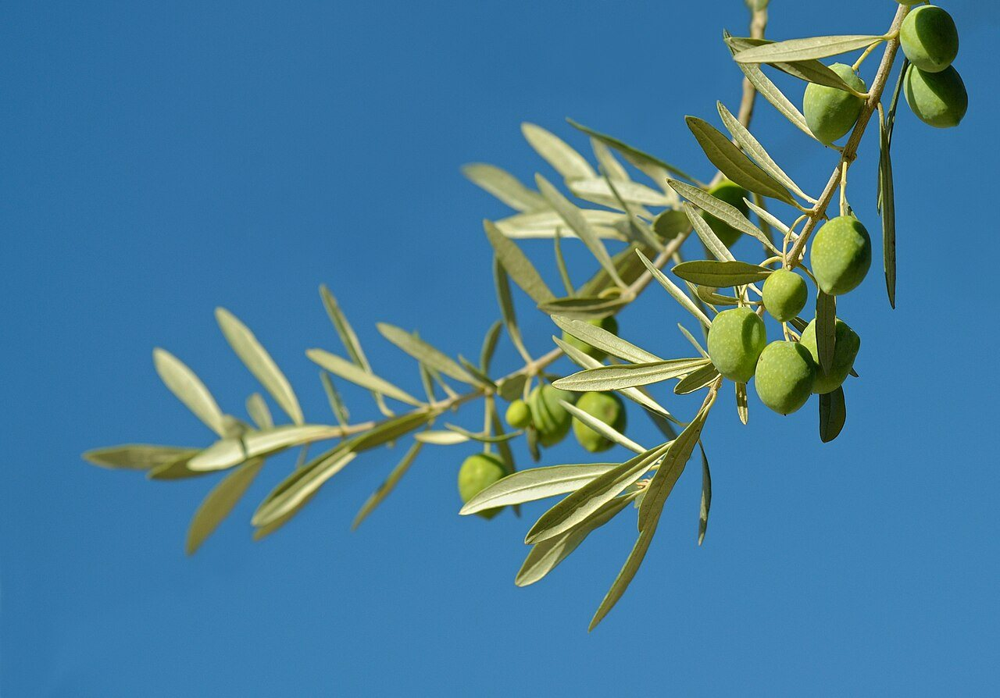
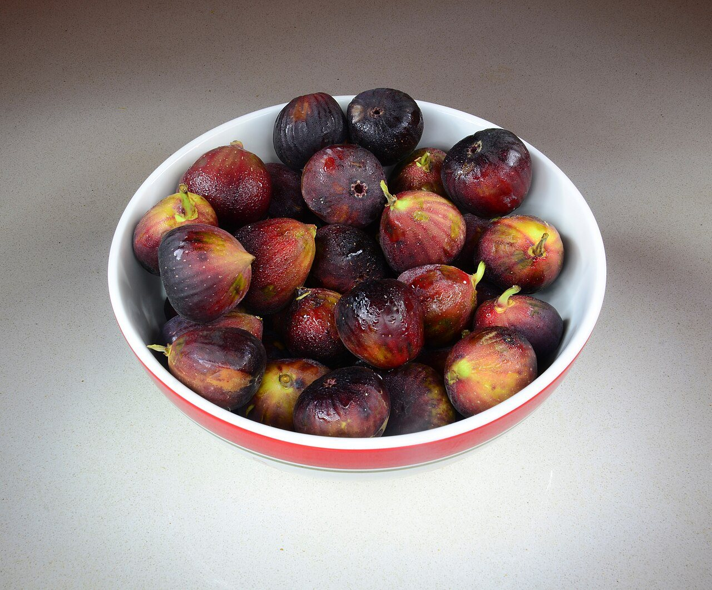
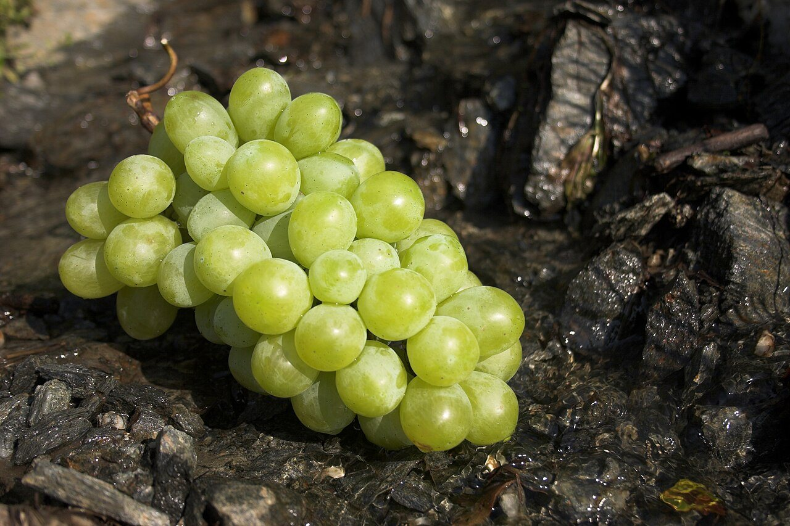
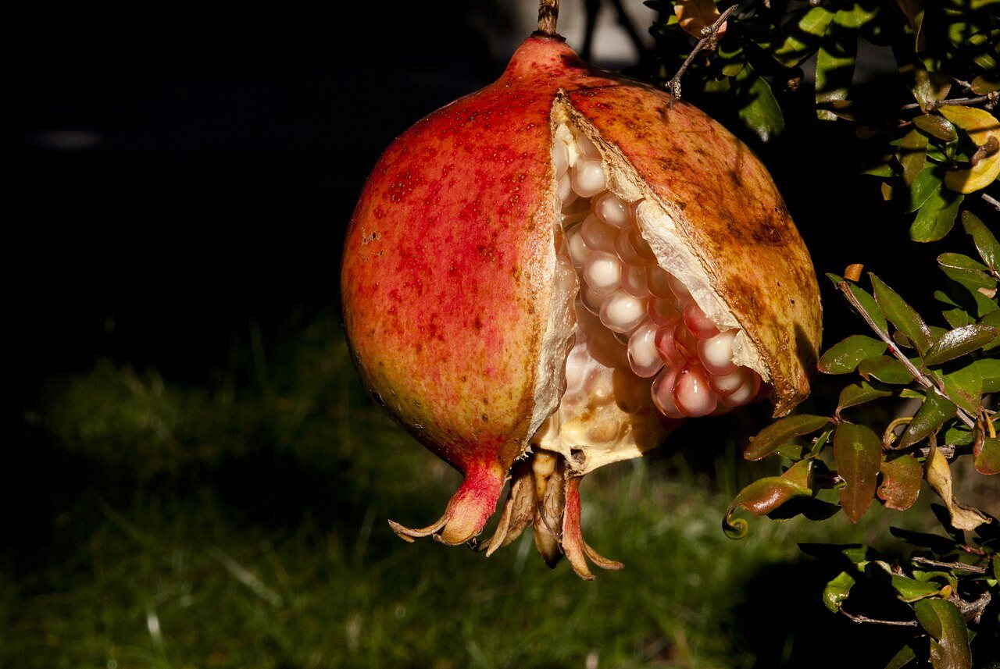
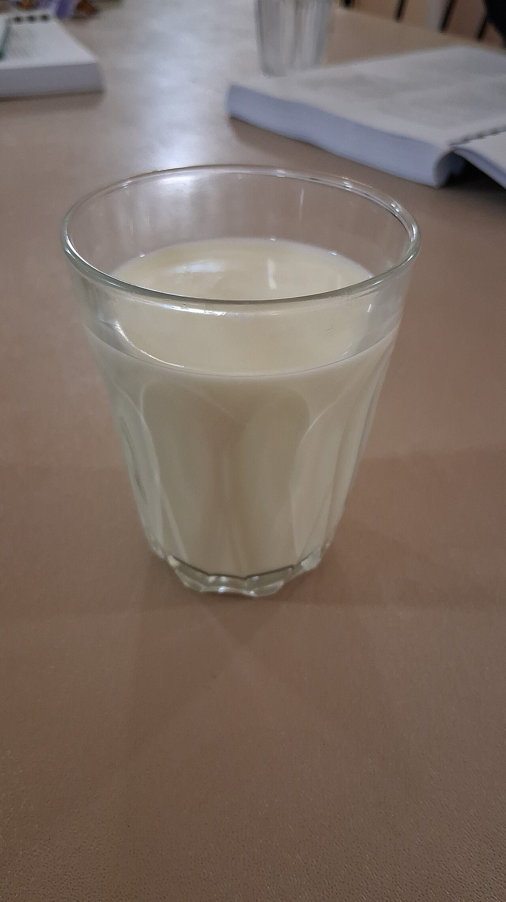
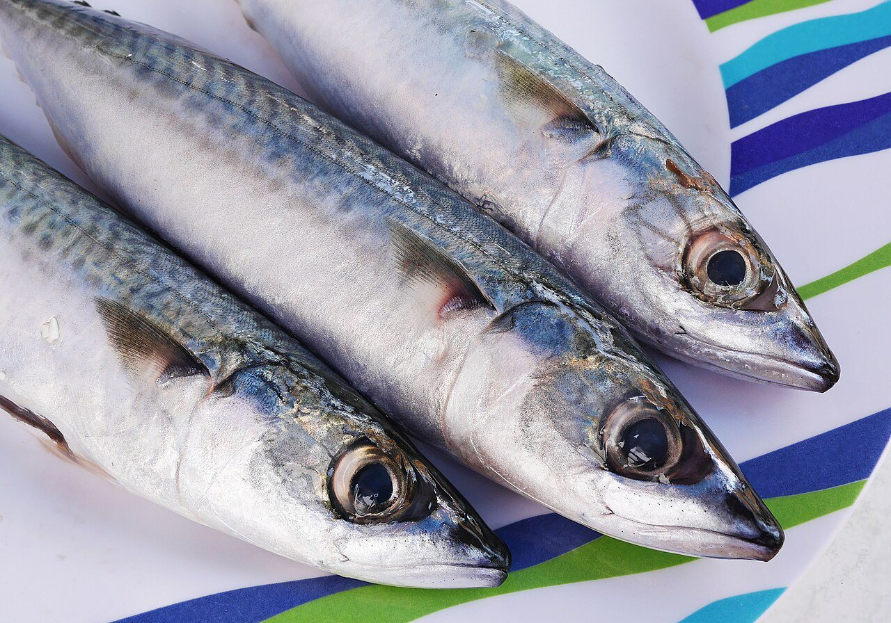
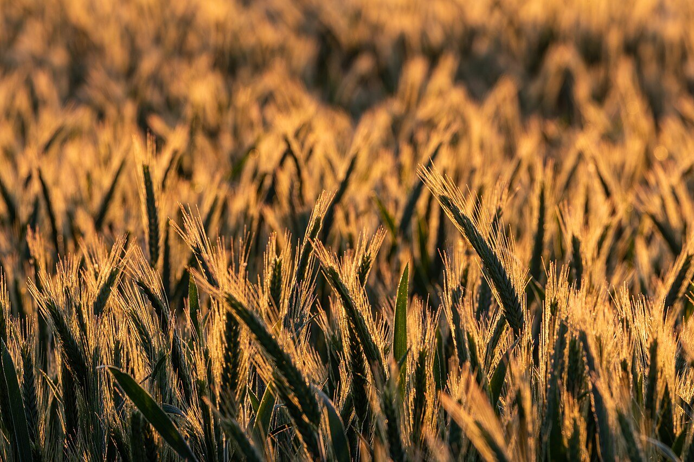
يَخْرُجُ مِنْ بُطُونِهَا شَرَابٌ مُخْتَلِفٌ اَلْوَانُهُ ف۪يهِ شِفَٓاءٌ لِلنَّاسِۜ اِنَّ ف۪ي ذٰلِكَ لَاٰيَةً لِقَوْمٍ يَتَفَكَّرُونَ ﴿٦٩﴾
Senin Rabbin, bal arısına şöyle vahyetti: “Dağlarda, ağaçlarda ve kovanlarda evler yap. Sonra her çeşit mahsülden ye…” Onların karınlarından, içinde insanlar için şifa bulunan, çeşitli renklerde bal çıkar.
Nahl Sûresi, 68–69. ayetler
İçindeki doğal şekerler (glikoz ve früktoz) kana çabuk karışır; yorgunlukta ve sporda iyi bir enerji kaynağıdır.
Su oranı çok düşük ve hafif asitli olduğu için içinde bakteri çoğalamaz; bu yüzden bal yıllarca bozulmaz.
Boğazı yumuşatır, öksürüğü yatıştırır. Ilık suyla ya da ıhlamurla içilen bal bu yüzden sevilir.
Hastanelerde, steril hâle getirilmiş “tıbbi bal” bazı yara ve yanıkların pansumanında kullanılır.
Ayette balın “çeşitli renklerde” olduğu söylenir: balın rengi ve tadı, arının dolaştığı çiçeğe göre değişir. Peygamberimiz de karnı ağrıyan bir kişi için üç kez “Bal şerbeti içir” buyurmuş, dördüncüde hasta iyileşmiştir. Buhârî (Tecrid-i Sarih, Hadis No: 1922)
Dikkat: Bal, 1 yaşından küçük bebeklere verilmez.
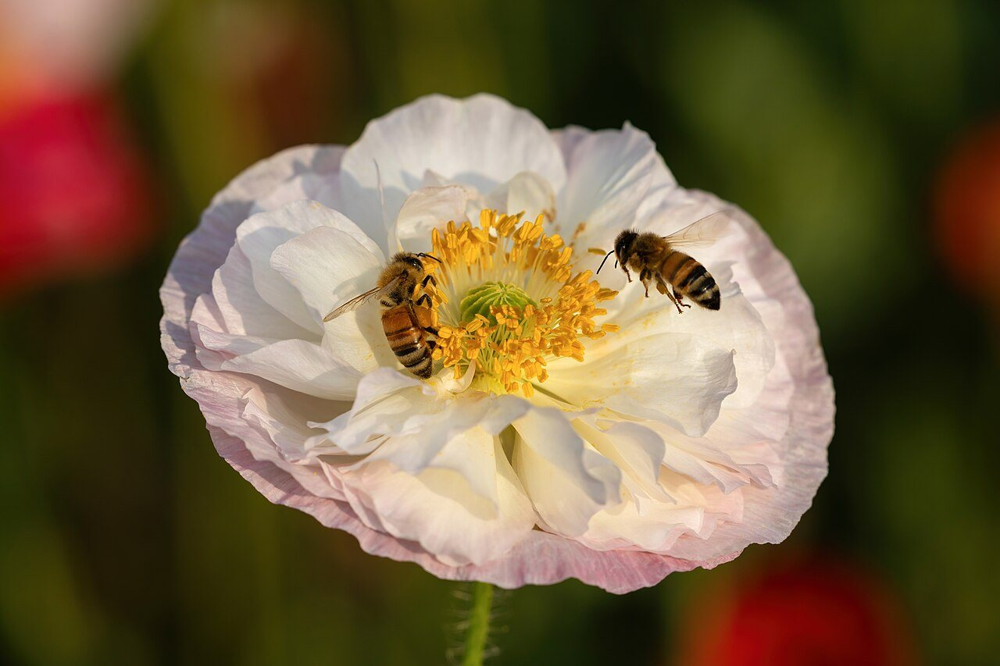
وَهُزّ۪ٓي اِلَيْكِ بِجِذْعِ النَّخْلَةِ تُسَاقِطْ عَلَيْكِ رُطَبًا جَنِيًّاۘ ﴿٢٥﴾
“Hurma ağacını kendine doğru salla, sana kemale ermiş taze hurma dökülsün. Artık ye, iç, gözün aydın olsun!”
Meryem Sûresi, 25–26. ayetler
Doğal şekeri sayesinde kan şekerini hızla toparlar. Uzun süre aç kalan biri için ilk lokma olarak çok uygundur.
Bol lifi sindirimi düzenler ve tok tutar; kabızlığa karşı iyi gelir.
Kasların ve sinirlerin düzgün çalışması, tansiyonun dengede kalması için gerekli minerallerdir.
Şekerleme yerine 2–3 hurma; hem tatlı isteğini karşılar hem vitamin ve mineral verir.
Hz. Meryem’e en zor anında iki şey verildi: hurma ve su. Yani hızlı enerji ve sıvı; yorulan bir bedenin ilk ihtiyacı da tam olarak budur. Tefsirde geçen hadiste Peygamberimiz, lohusa kadınlara hurma yedirilmesini tavsiye eder.
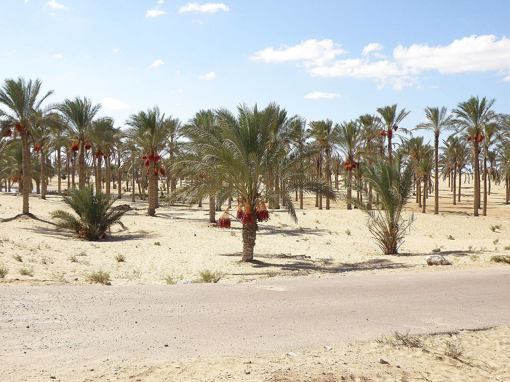
وَشَجَرَةً تَخْرُجُ مِنْ طُورِ سَيْنَٓاءَ تَنْبُتُ بِالدُّهْنِ وَصِبْغٍ لِلْاٰكِل۪ينَ ﴿٢٠﴾
Yine bu su sebebiyle Tur-i Sina’dan çıkan, hem yiyenlere katık, hem de yağ veren zeytin ağacı yarattık.
Mü’minûn Sûresi, 20. ayet · Nûr Sûresi 35. ayette ise “mübarek zeytin ağacı” diye geçer.
Zeytinyağındaki oleik asit “iyi” yağlardandır; kalp ve damar sağlığını korumaya yardım eder.
E vitamini ve polifenoller, hücreleri yıpratan zararlı maddelere karşı vücudu korur.
Dünyanın en sağlıklı beslenme biçimlerinden sayılan Akdeniz tipi beslenmenin ana yağı zeytinyağıdır.
Yüzyıllardır cilt ve saç bakımında, sabun yapımında kullanılır; cildi nemlendirir.
Ayet zeytini iki yönüyle anar: katık (kahvaltıdaki zeytin) ve yağ (zeytinyağı). Hadisteki “yiyin ve sürünün” tavsiyesi de bugün bildiğimiz iki faydaya, beslenmeye ve cilt bakımına işaret eder.
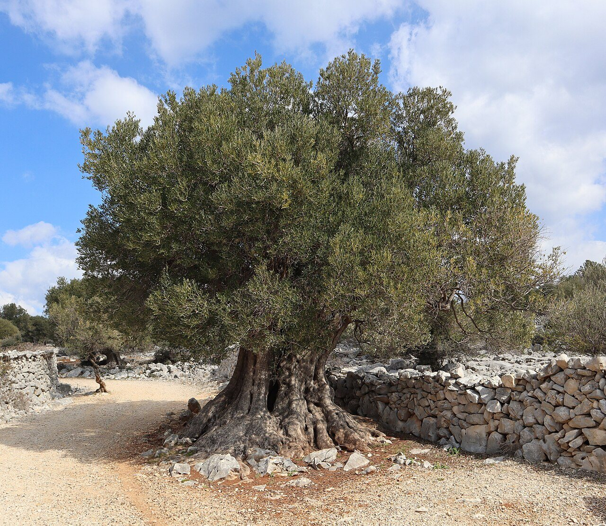
وَالتّ۪ينِ وَالزَّيْتُونِۙ ﴿١﴾
İncire ve zeytine, Tur-i Sina’ya ve Emin Belde’ye yemin ederim ki, muhakkak Biz, insanı en güzel şekilde yarattık.
Tîn Sûresi, 1–4. ayetler · “Tîn” incir demektir; sûre adını bu meyveden alır.
Lifi çok yüksektir; bağırsakları çalıştırır.
Meyveler içinde kalsiyumu en zengin olanlardandır.
Kuru incir uzun süre saklanır, sağlıklı bir atıştırmalıktır.
Ve hurma ağaçlarının meyvelerinden ve üzümlerden bir içecek ve bir güzel rızık elde edersiniz. Şüphesiz bunda, aklını kullanan bir topluluk için elbette Allah’ın kudretine bir delil vardır.
Nahl Sûresi, 67. ayet
Kabuğundaki ve çekirdeğindeki polifenoller hücreleri korur.
Demir ve enerji kaynağıdır; okul çantasına çok yakışır.
Demir ve kalsiyum içerir; kışın sofraların doğal tatlısıdır.
ف۪يهِمَا فَاكِهَةٌ وَنَخْلٌ وَرُمَّانٌۚ ﴿٦٨﴾
“O iki Cennette de her türlü meyve, hurma ve nar vardır.” · “Her birinin meyve verdiği zaman, meyvesine ve onun olgunlaşmasına ibretle bakın.”
Rahmân Sûresi, 68. ayet · En’âm Sûresi, 99. ayet
Bağışıklığı destekler; tam da kış mevsiminin meyvesidir.
Kırmızı rengini veren maddeler hücreleri korur.
Taneleriyle yenirse sindirime de yardımcı olur.
Şüphesiz koyun, keçi, inek ve devede sizin için bir ibret vardır. Size o hayvanların karnındaki tortu ile kan arasından, içenlerin boğazından kolaylıkla geçen safi süt içiriyoruz.
Nahl Sûresi, 66. ayet
Kalsiyum ve fosfor, büyüme çağında iskeleti güçlendirir.
Kasların gelişmesi ve onarımı için gereklidir.
Besinler sindirilir, kana geçer; süt, kandan süzülen maddelerle yapılır.
Taze et yemeniz ve takınacağınız ziynetler çıkarmanız için, denizi sizin hizmetinize veren O’dur… Bunlar, Allah’ın lütfundan nasibinizi aramanız ve şükretmeniz içindir.
Nahl Sûresi, 14. ayet
Beyin gelişimi, hafıza ve kalp sağlığı için çok değerlidir.
Kaslar ve kemikler için; iyot da cabası.
Ayet “taze” der: balığın en faydalısı taze olanıdır.
Yusuf dedi ki: “Yedi sene devamlı olarak ekersiniz, her sene biçtiğiniz mahsülü, yiyeceğiniz az bir miktarı hariç, başaklarıyla bırakın.”
Yûsuf Sûresi, 47. ayet · Bakara 261’de de infak, “yedi başak veren ve her başağında yüz tane bulunan bir tohuma” benzetilir.
Ekmek, bulgur ve makarnanın ana maddesidir.
Kepeğiyle yenirse lif ve B vitaminleri verir, tok tutar.
Kabuğu içinde saklama: binlerce yıllık gıda saklama bilgisi.
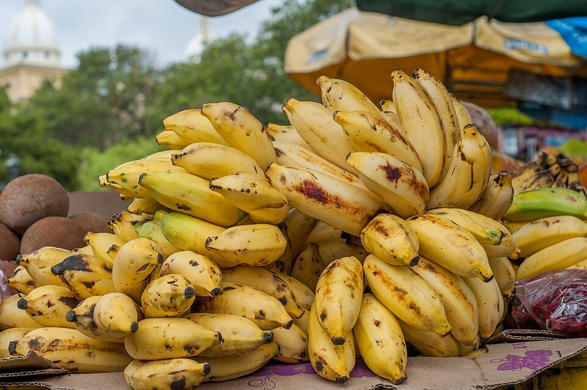
Cennet nimetleri arasında “meyvesi aşağıdan yukarıya güzel dizilmiş muz ağacı” sayılır. Potasyumu boldur, sporcuların meyvesidir.
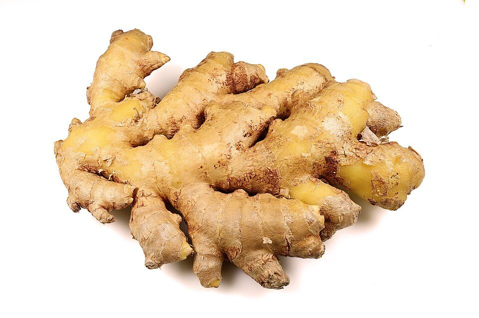
Cennet ehline zencefil (zencebil) katılmış bir kadehten içirilir. Mideyi rahatlatır, bulantıya ve soğuk algınlığına iyi gelir.
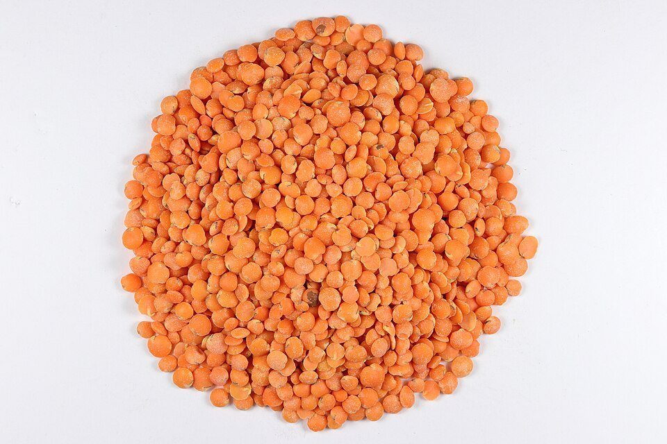
İsrailoğulları Hz. Musa’dan sebze, salatalık, buğday, mercimek ve soğan istemişti. Mercimek bitkisel protein ve demir kaynağıdır.
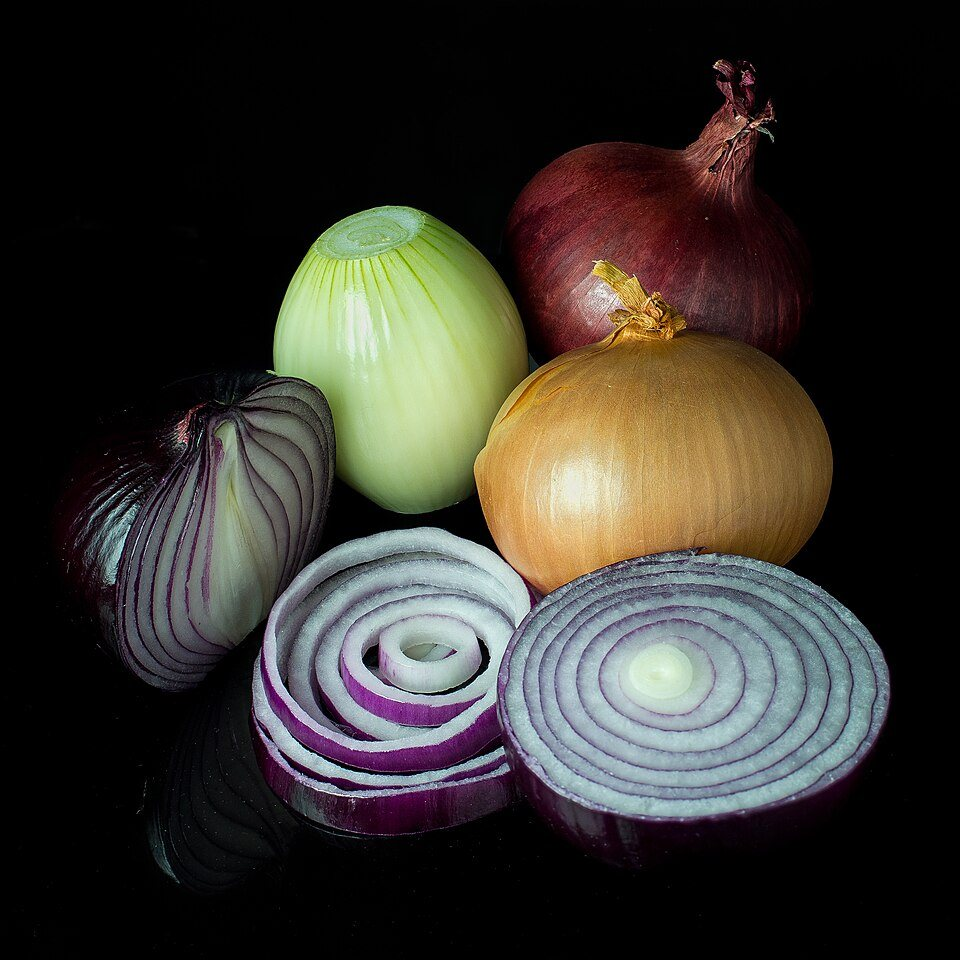
Aynı ayette anılır. İçindeki kükürtlü bileşikler mikroplara karşı koruyucudur; C vitamini de içerir.
“Ey insanlar! Yeryüzündeki şeylerin helal ve temiz olanlarından yiyin.”Bakara Sûresi, 168. ayet
“Yiyin, için, fakat israf etmeyin. Şüphesiz ki Allah’u Teala, müsrifleri sevmez.”A’râf Sûresi, 31. ayet
“Size verdiğimiz rızıkların helal ve temiz olanlarından yiyin ve Allah’u Teala’ya şükredin.”Bakara Sûresi, 172. ayet
Peygamberimiz, yanında büyüyen Ömer b. Ebû Seleme’ye şöyle buyurdu: “Oğlum, Besmele çek! Sağ elinle ye! Hep önünden ye!” Bir başka hadiste de: “Canının her istediği şeyi yemen israftandır.” Buhârî, Et’ime 2–3; Müslim, Eşribe 13 · İbn Mâce, Et’ime 51
| Yiyecek | Ayet | Ayette öne çıkan | Sağlığa faydası |
|---|---|---|---|
| 01Bal | Nahl 68–69 | “İçinde insanlar için şifa var” | Enerji verir, mikroplara karşı korur, boğazı yumuşatır |
| 02Hurma | Meryem 25–26 | Hz. Meryem’e ikram edilen taze hurma | Hızlı enerji, lif, potasyum ve magnezyum |
| 03Zeytin | Mü’minûn 20 · Nûr 35 | “Hem katık hem yağ veren” mübarek ağaç | Kalp dostu yağ, E vitamini, antioksidan |
| 04İncir | Tîn 1 | Üzerine yemin edilen meyve | Lif ve kalsiyum; sindirimi düzenler |
| 05Üzüm | Nahl 67 | “Güzel rızık”: yaşı, kurusu, pekmezi | Antioksidan; kuru üzüm ve pekmezde demir |
| 06Nar | En’âm 99 · Rahmân 68 | Dünyada ibret, Cennette nimet | C vitamini ve güçlü antioksidanlar |
| 07Süt | Nahl 66 | “Tortu ile kan arasından safi süt” | Kalsiyum ve protein; kemik ve diş gelişimi |
| 08Balık | Nahl 14 · Fâtır 12 | Denizden “taze et” | Omega-3, protein, D vitamini |
| 09Buğday | Yûsuf 47 · Bakara 261 | Başağında saklama, bereket misali | Enerji; tam tahılda lif ve B vitaminleri |
Kapanışta · Yâsîn Sûresi 33–35
اَفَلَا يَشْكُرُونَ ﴿٣٥﴾
“Biz kuru yere hayat verdik ve oradan taneler çıkardık da ondan yerler. O yerde, hurma ve üzüm çeşitlerinden bahçeler yarattık… Böylece onun mahsulünden ve kendi elleriyle yetiştirdiklerinin meyvelerinden yesinler.” Sofradaki her lokma bir nimet; her nimet de bir teşekkür sebebi.
Nadiri Tefsiri. Sunumdaki bütün ayet mealleri, “İzah” bölümleri ve Hadis-i Şerif’ler bu tefsirden alınmıştır; hadis kaynakları tefsirdeki dipnotlarda gösterildiği şekliyle yazılmıştır.
Genel beslenme bilgilerine dayanır; bilgilendirme amaçlıdır, tıbbi tavsiye değildir.
Sunumu PDF olarak indir ↓